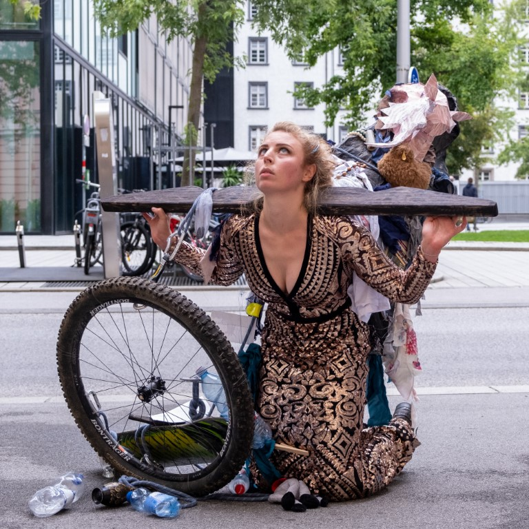
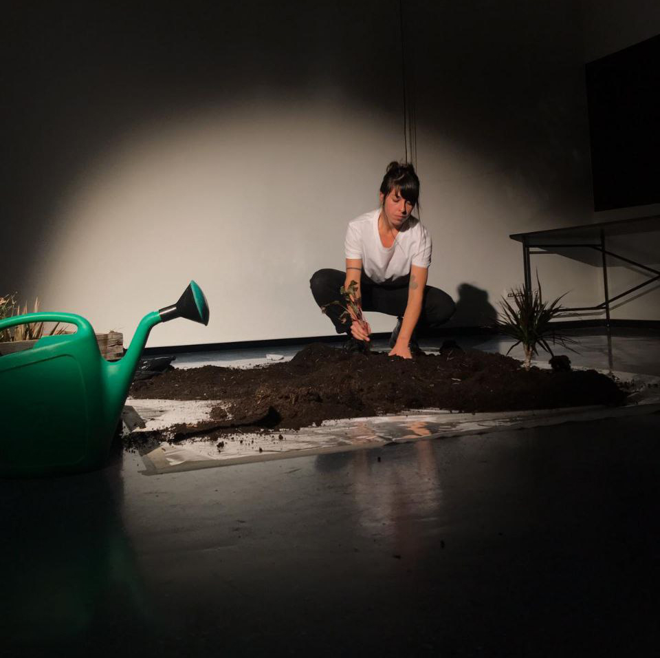
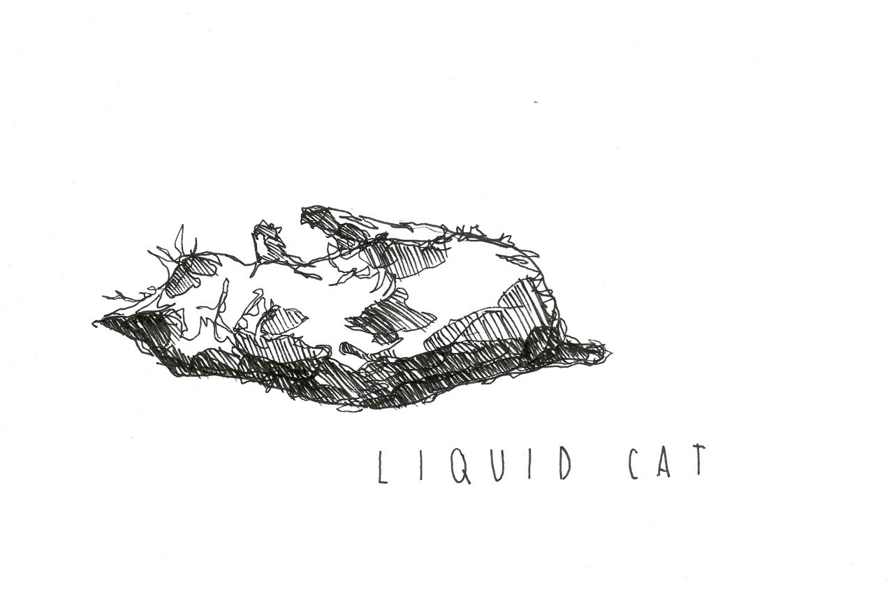

Association of visual and performative art · Innsbruck, Austria
Embracing the vibrant spirit of Tirol, we envision a cultural landscape where visual and performative art intertwine to create a dynamic tapestry that reflects the essence of dialogue through motion. Our vision is to cultivate an environment where artistic expressions transcend boundaries, fostering a rich and inclusive artistic community.
"Motion Mode of Dialogue in Tirol" is dedicated to advancing visual and performative art by providing a platform for artists to explore the convergence of motion and dialogue. Through exhibitions, performances, and collaborative projects, our mission is to ignite conversations, spark creativity, and celebrate the diverse voices that contribute to the cultural mosaic of Tirol.
Solo & CI Tirol Festival and international dance gatherings from 2019 to 2026.
Performative research, contemporary dance theatre, and multimedia films.
Upcoming classes, contact improvisation jams, and performances in Tirol & abroad.
Join our association, enjoy 20% event discounts, and promote your artistic work.

Founder · ChoreographerTamara Maksymenko is a professional dancer, choreographer, and teacher of contact improvisation and contemporary dance for 18 years already. She has been teaching workshops across Europe, Asia, and North Africa (Poland, Spain, Israel, Austria, Italy, Greece, Finland, Egypt, Germany, Ukraine, Morocco, Bulgaria, Sweden, Portugal, France, Turkey).
Founder of Motion Mode Dance Theatre (MMDT), co-founder of Motion Mode of Dialogue in Tirol, and creator of the "Solo & CI Tirol Festival" and "West meets East". With 30 years of dance practice, she holds medical and sociological degrees, and trained at the Physical Theatre in Intragna (Switzerland) with Thomas Mattler. Member of the Ukrainian Contemporary Dance Platform and OFFTANZ Tirol.

Co-Founder · Visual ArtistLucilla Patrizi is a freelance artist, biologist and pole art trainer living in Innsbruck, Tyrol. In 2021 she graduated from the Faculty of Design and Arts at the Free University of Bolzano, specialising in art, following a Degree in Biology at the University of Innsbruck.
Active as a freelance artist in Tyrol and South Tyrol with exhibitions, performances, illustration commissions and co-organisation of cultural and artistic projects. Co-organiser of the annual "Solo and CI Festival in Tyrol" and co-founder of "Motion Mode of Dialogue in Tirol". Member of the Tiroler Künstler:innenschaft Tirol since 2022.

Artwork by Lucilla Patrizi